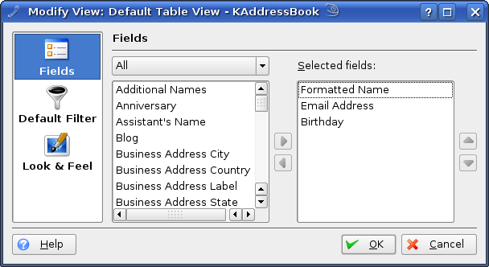

In this version, KAddressBook offers different views, which can represent the contacts in three different ways:
- Table View
All contacts are listed in a table; they can be sorted by clicking at the column header of the table. The columns of the table depend on the fields which were selected in the view configuration dialog.
- Icon View
The contacts are listed as icons in a view. If the contact contains a photo or logo, then it is used in the view; otherwise, an default icon is used.
- Card View
All contacts are presented in form of cards. The titles of these cards are the formatted names; the body of each card depends on what fields were selected in the view configuration dialog.

The View Configuration Dialog.
The Fields page offers you the possibility of selecting which of the stored details of a contact should be shown in the view. In the Default Filter page you can setup what filter should be used by the view.